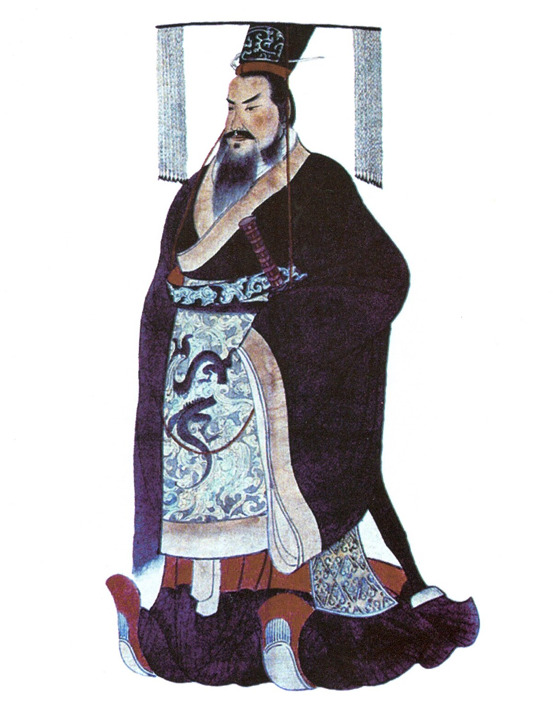
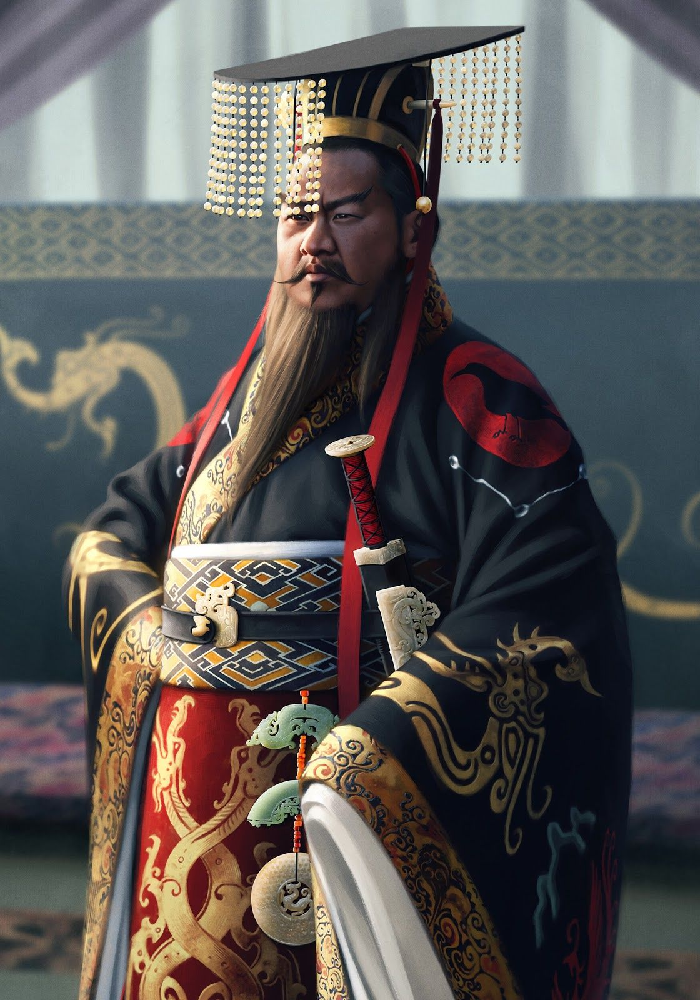
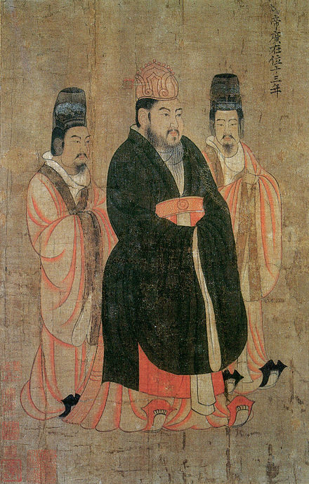
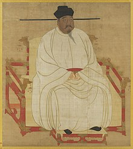
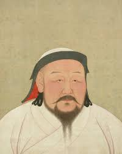
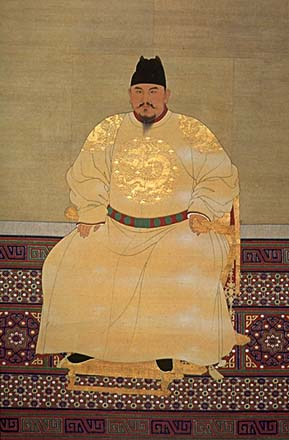
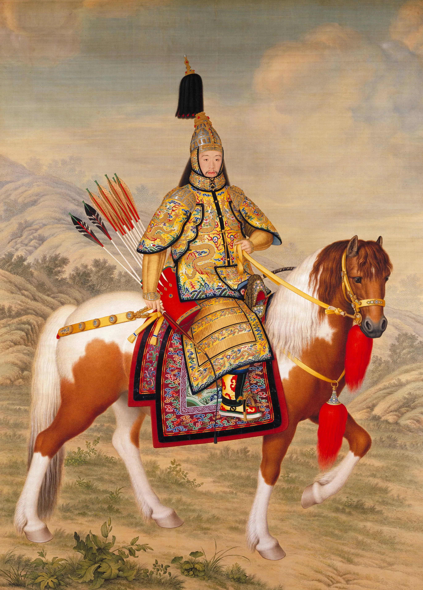

Imperio Chinês
O Império Chinês refere-se a um longo período da história da China, marcado pela sucessão de dinastias imperiais que governaram o país. Este período começou com a Dinastia Qin em 221 a.C., quando Qin Shi Huang unificou a China pela primeira vez, e terminou com a queda da Dinastia Qing em 1912 d.C., quando a República da China foi estabelecida.
Principais Dinastias:
- Dinastia Qin (221-206 a.C.):

Conhecida por unificar a China e padronizar a escrita, moeda e sistema de medidas. Qin Shi Huang, o primeiro imperador, também começou a construção da Grande Muralha da China.
- Dinastia Han (206 a.C. - 220 d.C.):

Marcada pelo desenvolvimento cultural e científico. A Rota da Seda foi estabelecida, promovendo o comércio entre a China e o Ocidente.
- Dinastia Tang (618-907):

Considerada uma era dourada da cultura chinesa, com grandes avanços na poesia, arte e comércio.
- Dinastia Song (960-1279):

Conhecida pelo progresso econômico e tecnológico, incluindo a invenção da pólvora e da impressão com tipos móveis.
- Dinastia Yuan (1271-1368):

Fundada por Kublai Khan, líder mongol, esta dinastia integrou a China ao vasto Império Mongol.
- Dinastia Ming (1368-1644):

Conhecida pela construção da Cidade Proibida e pela expansão da Grande Muralha. Foi uma época de grande desenvolvimento cultural e artístico.
- Dinastia Qing (1644-1912):

dinastia imperial, que expandiu as fronteiras da China ao seu maior território. Enfrentou desafios internos e externos, culminando na Revolução Xinhai e no fim do sistema imperial.
Características do Império Chinês:
- Burocracia Centralizada: A administração era baseada em um sistema burocrático complexo, com funcionários selecionados por meio de exames de mérito.
- Confucionismo: A filosofia confuciana influenciou profundamente a política, sociedade e educação, enfatizando a moralidade, a hierarquia e a ordem social.
- Desenvolvimentos Tecnológicos e Culturais:Durante esses séculos, a China fez contribuições significativas em diversas áreas, incluindo a invenção do papel, da bússola, da pólvora e da impressão.
- Comércio e Expansão A China teve períodos de grande expansão territorial e comercial, especialmente durante as dinastias Han, Tang e Ming.
O Império Chinês teve um impacto duradouro na civilização global, moldando não apenas a Ásia Oriental, mas também influenciando o mundo em termos de cultura, tecnologia e filosofia.
Curiosidades
- A Grande Muralha da China, construída durante várias dinastias, especialmente a Ming, tem mais de 21.000 km de comprimento.
- Qin Shi Huang, o primeiro imperador da China, foi enterrado com um exército de terracota composto por mais de 8.000 soldados de argila para protegê-lo na vida após a morte.
- A seda, uma invenção chinesa, era tão valorizada que era usada como moeda em algumas dinastias.
- O papel foi inventado durante a Dinastia Han pelo eunuco Cai Lun em 105 d.C., revolucionando a escrita e a comunicação.
- A bússola, outra invenção chinesa, foi criada durante a Dinastia Han e originalmente usada para a orientação espiritual em vez de navegação.
- A impressão com tipos móveis, inventada por Bi Sheng durante a Dinastia Song, precedeu a prensa de Gutenberg por cerca de 400 anos.
- Durante a Dinastia Tang, a China era o país mais avançado do mundo em termos de cultura, economia e tecnologia.
- A Cidade Proibida, construída durante a Dinastia Ming, serviu como residência imperial por quase 500 anos e é composta por mais de 900 edifícios.
- O Império Chinês tinha um sistema complexo de exames imperiais para selecionar oficiais governamentais com base no mérito, um precursor dos sistemas modernos de serviço civil.
- A porcelana, conhecida no Ocidente como "china", foi desenvolvida durante as Dinastias Tang e Song e tornou-se um dos principais produtos de exportação da China.